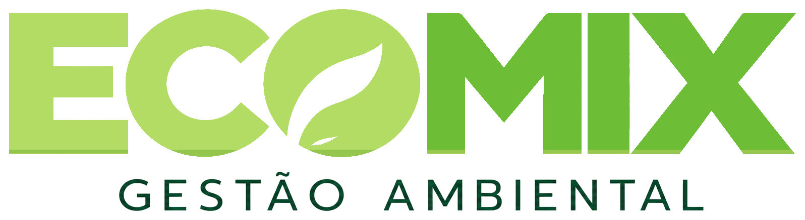
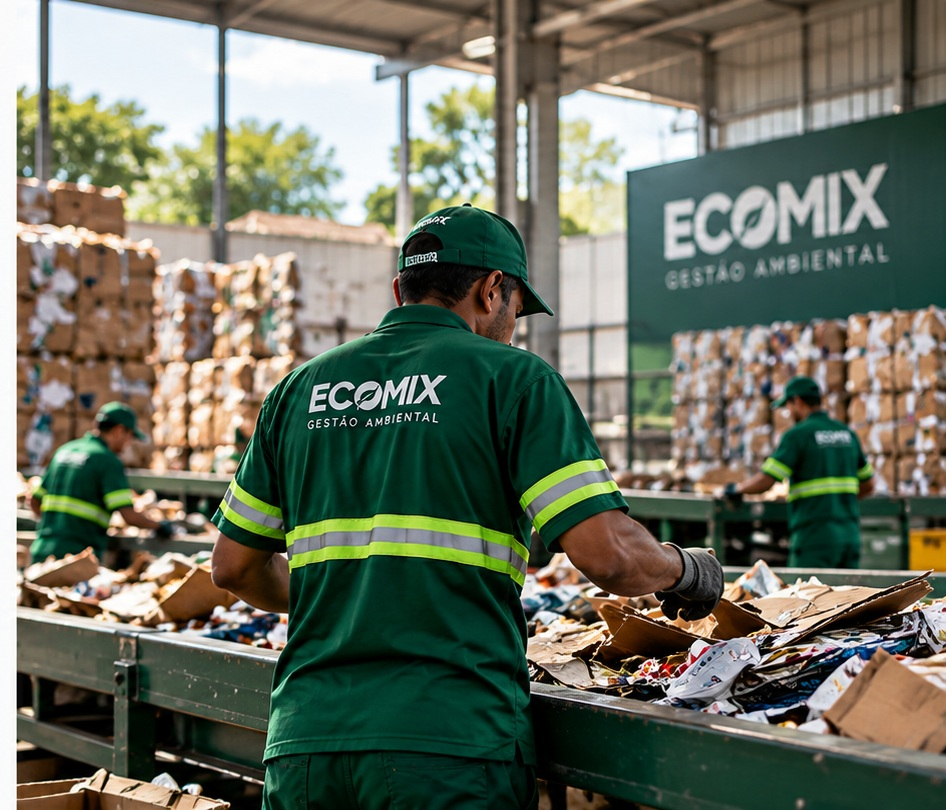

01
Coleta inteligente
Rotinas e frequências definidas de acordo com a necessidade.
→


Coleta, triagem, reciclagem e gestão ambiental para empresas e condomínios.
A EcoMix organiza a gestão dos resíduos desde a coleta até a destinação, criando uma operação adequada à realidade de cada cliente.
Nosso trabalho busca reduzir desperdícios, aumentar o aproveitamento dos materiais e tornar a rotina de descarte mais simples.
Entenda nossa operação →Do diagnóstico à destinação, a EcoMix estrutura a rotina de acordo com o local, volume e frequência.
Rotinas e frequências definidas de acordo com a necessidade.
Organização dos materiais para melhorar o aproveitamento.
Encaminhamento dos materiais para a destinação adequada.
Acompanhamento da operação e apoio na organização.
Da avaliação inicial à destinação e ao acompanhamento, a EcoMix organiza a rotina de resíduos com coleta, triagem, reciclagem, gestão e apoio operacional.
Veja nossos serviços, o processo de atendimento e como estruturamos uma solução para empresas e condomínios.
Baixar apresentação em PDF ↓Retirada programada conforme volume e necessidade.
Organização dos materiais para melhor aproveitamento.
Encaminhamento adequado com foco em reaproveitamento.
Acompanhamento e organização da rotina de descarte.
Suporte para demandas recorrentes ou pontuais.
Planejamento sob medida para cada operação.
Uma rotina simples e organizada para síndicos, administradoras e moradores.
Separação correta melhora o aproveitamento e deixa a operação mais eficiente.
Atendemos empresas que precisam de uma operação confiável para coleta, triagem, reciclagem e destinação.

Entendemos o cenário atual.
Definimos a melhor rotina.
Colocamos o plano em prática.
Conte como funciona sua rotina hoje. Nós avaliamos a operação e montamos uma solução adequada.